Laser Slicer documentation
Turn a 3D model into plywood layers: load, check, export, cut, glue. This page explains every setting, with examples for beginners. Info icons in the app link here.
Getting started: load, check, export, cut, glue #
Laser Slicer turns a 3D model into flat layers of plywood (or any sheet material). You cut the layers with a laser cutter, stack them and glue them, and you get the shape back. Everything runs in your browser; nothing is uploaded.
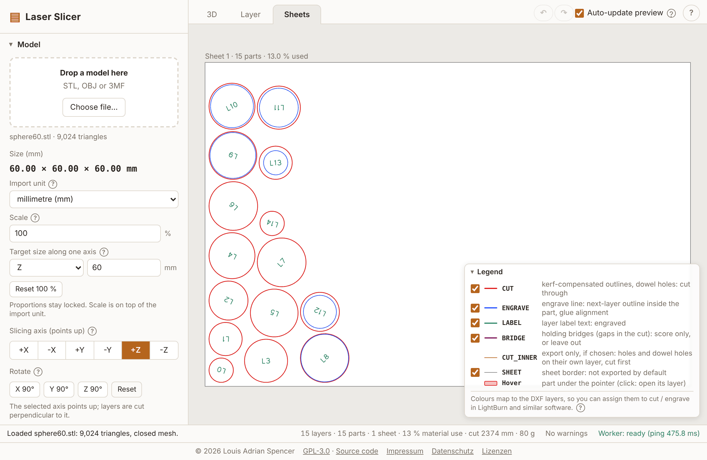
The first time you open the page a small demo model (a square base, a round tower with a step and a chamfered top, and a hole through the middle) is already loaded and sliced, so you can look at the tabs straight away. It is only an example: it is not saved, and loading your own file replaces it. The status bar says so.
New here? Use Basic mode (switch at the top of the settings panel): it shows only what you need to get cut outlines.
- Load a model. Drop an STL, OBJ or 3MF file on the page, or press Choose file… in the Model group. Look at the size readout (in mm). If it is tiny or huge, change the Import unit. Use Scale or Target size to get the size you want.
- Enter your material. In the Material group type the measured thickness of your plywood (use calipers), the sheet size and the kerf. If you do not know your kerf, cut the calibration sheet first. Pick the slicing axis so the model stands the way you want.
- Check the result. Open the 3D tab and switch to Stacked result, step through layers in the Layer tab, and look at the Sheets tab to see how the parts sit on the sheets. Read the warnings in the status bar. For a first try the defaults are fine; see Outline modes and Gluing aids when you want to improve things.
- Export. In the Export group choose formats (DXF is the one you cut with) and press Download all (ZIP). The ZIP holds one file per sheet and a
README.txtwith all settings and warnings. - Cut and glue. Open the DXF in your laser software and assign the colours as described in At the laser. Cut every part face-up. Stack bottom-up starting with layer 0, gluing each part exactly on the engraved outline of the part below. If you use dowels, thread the rod through the holes. In the default Oversize mode, sand the glued block to the final shape.
Never flip a part. Every part is cut and stacked face-up so the engraved lines and labels stay on the side you glue to.
Basic and Expert mode #
The switch Basic | Expert at the top of the settings panel (in the drawer on a phone) decides how much you see. Expert is the default and shows every setting described on this page. Basic hides everything that is not needed to get a set of plain cut outlines out of a model.
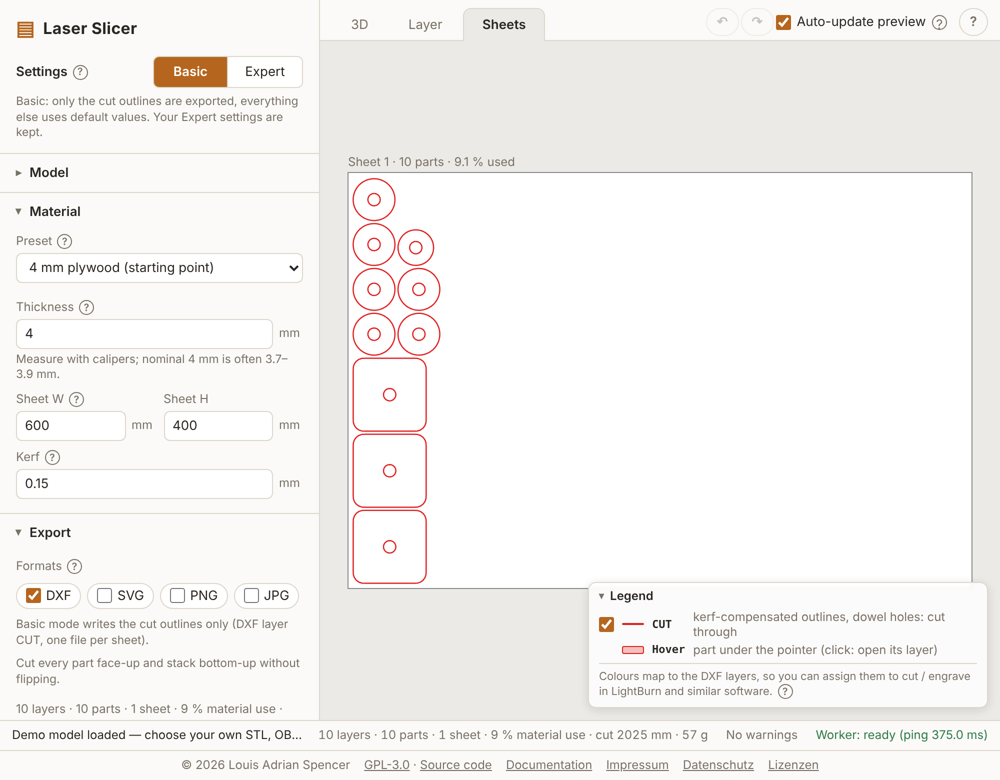
What Basic shows
- Model: the file, import unit, scale or target size, slicing axis and rotation (the whole group).
- Material: the preset list (you can apply a preset, but not save or delete one), thickness, sheet width and height and kerf.
- Export: the file formats DXF, SVG, PNG and JPG and the Download all (ZIP) button. The assembly guide, the layer chips, the layer range, one file per layer and the raster options are Expert settings.
- Legend: only the
CUTrow (and the Previous / Hover helper rows). The other rows describe layers Basic never writes.
What Basic exports
Only the cut outlines: the DXF (or SVG) has the layer CUT and nothing else. There are no engraved next-layer lines, no labels, no dowel holes, no holding bridges, no hollowing and no sheet border, so you have to align and glue the layers by eye. Every setting you cannot see takes its default value: oversize outlines, smoothing and simplification at their defaults, small parts below 4 mm² removed, part spacing 3 mm and sheet margin 5 mm, all layers, one file per sheet, raster images at 300 DPI. The summary line and the cost and time estimates use the same values.
Your Expert values are kept
Switching to Basic does not erase anything: the Expert values stay stored and come back exactly as they were when you switch back to Expert. While you are in Basic they are simply not used. The choice itself is remembered in this browser (it is not part of a project file). Because the Project group is Expert-only, a project is saved from Expert mode; if you do save while in Basic, the file holds the settings Basic works with.
Switch to Expert when you need engraved glue lines, labels, dowels, holding bridges, hollowing, the outline mode, a layer range or an assembly guide. Switching only re-slices if the settings in use actually change.
The interface #
The window has three areas.
- Settings panel (left). Collapsible groups, in this order: Model, Material, Holding bridges, Slicing, Hollowing, Gluing aids, Export and Project. Only Model starts open, the others are collapsed (the state is not remembered between visits). Basic mode shows only Model, Material and Export, with fewer controls in the last two (see Basic and Expert mode); Holding bridges, Slicing, Hollowing, Gluing aids and Project are Expert-only. Almost every control has a small info icon: hover it, focus it with the keyboard or tap it to read a short explanation and a Read more link to this page.
- Tab bar and view (right). The tabs 3D, Layer and Sheets, the undo and redo buttons, the Auto-update preview checkbox and the ? help button. See the tabs.
- Status bar (bottom). A progress bar while slicing, the latest message, a summary (
layers - parts - sheets - material use), the warnings button and a worker badge. Below it a bar with copyright, licence and the legal links.
Dropping a file anywhere on the page loads it. Loading a new model resets the selected layer to 0 but keeps all your settings. The page follows your system light or dark theme.
The summary line also shows the cut length and, once you have entered speeds or a price, a rough time and cost. Hover it for the full list.
3D, Layer and Sheets tabs #
| Tab | What it shows |
|---|---|
| 3D (key 1) | An orbitable 3D view (drag to rotate, wheel to zoom, right-drag or two fingers to pan). Switch between your Model and the Stacked result, see below. Fit view (key F) frames the model. |
| Layer (key 2) | One layer in 2D with a slider (or arrow keys). It shows that layer's outline in red, the previous layer as a grey ghost, the engraved next-layer outline as dashed blue lines, labels in green, dowel holes and, with bridges, the gaps in magenta. The info line says Layer i of N - Z a to b mm - k parts. Wheel to zoom, drag to pan, double-click to fit. |
| Sheets (key 3) | All nested sheets side by side exactly as they will be cut (with kerf applied). Hover a part to see its name, click it to jump to its layer. With a layer range a header says which layers the sheets hold. |
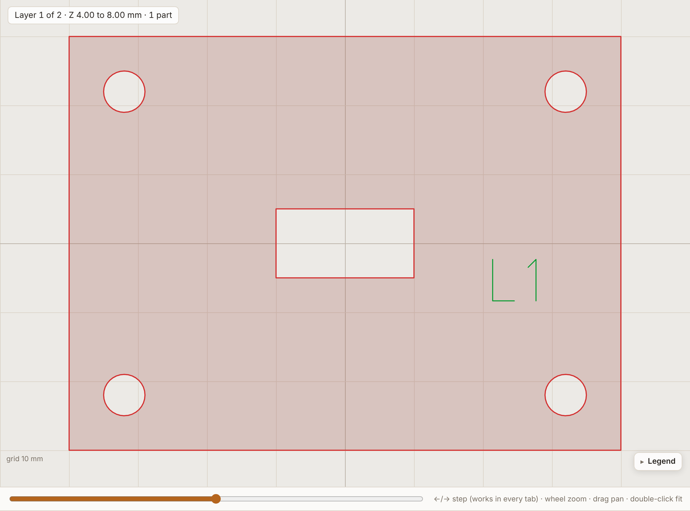
Layer numbers start at 0 for the bottom layer. Part names look like L012; a second separate piece in the same layer is L012-b.
Measure tool (Layer and Sheets tabs) #
Measure
Switch Measure on, then click (or tap) two points: a line is drawn with the distance in millimetres, the differences dx (to the right) and dy (up) and the angle (counter-clockwise from the right, in degrees). Before the first click the point under the pointer is marked; after it a dashed line follows the pointer with a live readout. The finished measurement stays on screen; the next click starts a new one. On a phone, tap the first point, then the second (no hover is needed).
- Snapping. The pointer snaps within 10 screen pixels (18 for a finger), in this order: corner (square marker), centre of a round hole, round part or dowel hole (circle with a cross), edge midpoint (triangle), and the edge (diamond): the nearest point on an outline. A tiny label names the snap type. Round holes and parts are detected automatically (a ring of at least 16 points that is circular within 2 %); their corners and midpoints are not offered, but their centre and rim are. In the Sheets tab the sheet corners and blocked areas snap too. Hold Alt to switch snapping off and pick the exact pointer position.
- Horizontal / vertical. After the first click, hold Shift to lock the line to the horizontal or vertical (whichever is closer to the pointer); snapping is off while Shift is held. There is no such lock on touch screens.
- Diameter. When the pointer or a clicked point is on a round hole (centre or rim), the readout and a label show the diameter, for example
Ø 6.00 mm, so one click on a hole is enough to read its size. Dowel holes show their kerf-compensated cut diameter. - Label. The distance, dx, dy and angle are shown in a label with a background next to the line; it keeps its size when you zoom and stays inside the view.
- Keyboard. The button is a normal toggle button (Tab to it, Space or Enter to switch). Esc clears the measurement; a second Esc switches the tool off. Switching it off, changing the layer or re-slicing also clears it.
- Units. Everything is in millimetres, the unit of the exported files. The app has no separate display unit: the import unit only converts the model file when it is loaded.
- Dragging and the tool. You can still pan and zoom with the tool on; a click counts only when the pointer did not move. While Measure is on, clicking a part in the Sheets tab does not jump to its layer.
The measurement is view only: it is not saved and has no effect on slicing or export. On sheets the sizes are those of the final kerf-compensated outlines; across two sheets the readout says "different sheets" because the sheets are drawn side by side with a gap.
Model vs. stacked result (3D) #
The segmented toggle in the 3D tab switches between two views (shortcut M):
- Model: the mesh you loaded, in the size and orientation you set, with a grid and bounding box.
- Stacked result: one solid slab per layer, alternating two wood tones, as the model will look once glued. The layer selected in the Layer tab is highlighted blue.
Use the stacked view to check steps, thin walls and hollowing before you export. It is available once slicing has finished. It shows outlines before kerf and does not draw bridges.
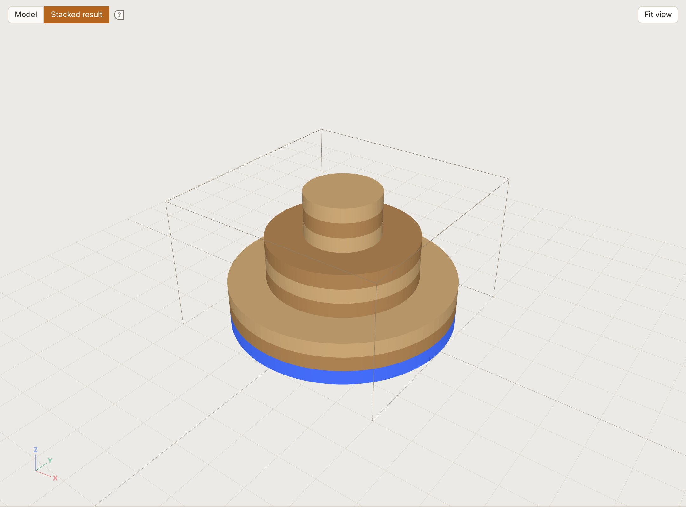
Explode and Section (3D stacked result) #
While the 3D tab shows the Stacked result, a small box at the bottom right has two sliders. Both are view only: they never change slicing, nesting or the exported files, they are not part of the project file and they start at 0 every time the page opens.
Explode
Pulls the layers apart vertically. At 100 % there is a gap of one layer thickness between neighbouring layers (layer n is lifted by n times thickness times the slider). Use it to check single layers, steps and thin walls, or to explain the build.
Section
Cuts the stack with a vertical plane and removes everything beyond it. 0 % leaves the stack whole; the plane then moves from the maximum side of the stack towards the minimum side, and at 100 % nothing is left. Choose X axis or Y axis to decide which direction the plane is perpendicular to.
The cut is made with a clipping plane in the graphics card. The layers are drawn as hollow shells with both faces visible, so a cut shows the inside of the layers and the walls of hollowing cavities; the cut faces are not capped. Reset sets both sliders to 0. Both sliders work with the keyboard (arrow keys). If your browser has no WebGL, the 3D view is off and so are these controls.
Legend and trace colours #
The Layer and Sheets tabs have a small legend at the bottom right (collapsible; on phones it starts collapsed). Its rows are named like the layers in the exported files, so the colours on screen tell you what each line will be at the laser.
| Row | Colour | Meaning |
|---|---|---|
CUT | red | Part outlines, and dowel holes. |
ENGRAVE | blue (dashed in the Layer tab) | The next-layer outline to glue on. |
LABEL | green | Layer numbers. |
BRIDGE | magenta | Gaps of the holding bridges (only with bridges on). |
SHEET | grey | Sheet border (not exported unless you choose it). |
CUT_INNER | orange | Export only: the inner cuts if you put them on their own layer. |
| Previous / Hover | grey / red fill | The previous layer in the Layer tab; the highlighted part in the Sheets tab. |
The checkbox in front of a row shows or hides that trace in both tabs. It is view only: it does not re-slice and does not change the exported files. Which layers go into the files is chosen separately in Layers in the files. The choice is remembered in the browser.
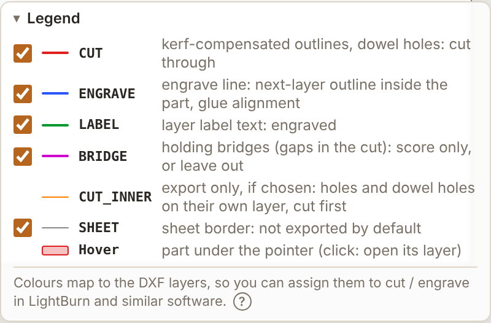
Auto-update and Update preview #
Auto-update preview (checkbox in the tab bar, on by default) re-slices the model about 0.3 seconds after every change, so the preview always follows your settings.
For large or slow models turn it off. Changes are then collected and an Update preview button appears at the top right of every tab (shortcut U) with a note such as "settings changed" or "not sliced yet". A newly loaded model is shown in 3D but not sliced until you update. Download all (ZIP) always updates first, so the files always match the settings you see. Turning auto-update back on updates at once if anything changed.
Settings that only affect the export (formats, DPI, image style, layer chips, file mode) never re-slice. The choice is remembered in the browser and is not part of the project file.
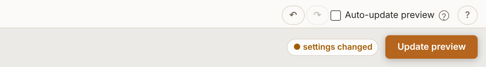
Warnings and notes #
Problems found while loading or slicing are listed behind the button in the status bar, e.g. 0 errors, 3 warnings, 1 note. Click it to open the list: errors and warnings are open, notes are collapsed. An entry that belongs to a layer is a button that jumps to that layer. Esc or a click outside closes the list. The same list is written to the README.txt in the ZIP.
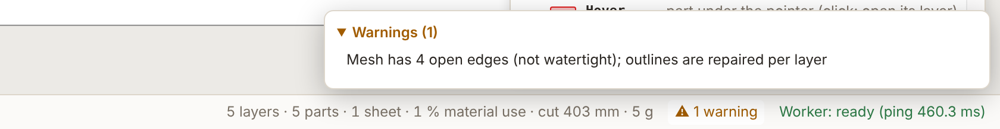
| Level | Typical message | What to do |
|---|---|---|
| Warning | N open edges / non-manifold edges | The mesh is not watertight. The tool closes gaps per layer with a straight line; check the affected layers. Repair the mesh in your modelling program if the result looks wrong. |
| Info | Degenerate triangles removed | Harmless clean-up. |
| Warning | Part removed (area below min part area) / Hole removed | Tiny pieces were deleted. See Minimum part area. |
| Info / warning | Label does not fit under the next layer / is shrunk / too small | The label was placed inside the part or made smaller. See Layer labels. |
| Warning / info | Dowels: run shorter than 2 layers, no room, only K of N fit | See Dowel holes. |
| Info | Outlines too short for N bridges | See Holding bridges. |
| Error | Part (w x h) larger than the usable sheet area and left out | Make the sheet bigger, reduce the margin or scale the model down. |
| Error | No parts were produced | The model is thinner than one layer, or Min part area is too large. |
| Error (status bar) | Too many layers (above 5000) | Increase the material thickness or scale the model down. |
Errors that stop an action (wrong file type, not a valid STL/OBJ/3MF file, no triangles) appear in red in the status bar and keep your previous model. Export problems appear under the download button.
Undo, redo and keyboard shortcuts #
Every settings change can be undone (up to 100 steps) with the two arrow buttons next to Auto-update preview or with the keys below. Rapid edits of one field within a second are one step; applying a preset, loading a project or resetting is one step. Loading a model is not an undo step (loading a project file is). Undo is ignored while you type in a field, where the browser's own undo works.
| Key | Action |
|---|---|
| 1 2 3 | 3D, Layer, Sheets tab |
| Arrow keys | Previous / next layer |
| PgUp / PgDn | 10 layers up / down |
| Home / End | First / last layer |
| M | 3D tab: Model / Stacked result |
| F | 3D tab: frame the model |
| U | Update preview (auto-update off) |
| Ctrl+Z (Cmd on a Mac) | Undo |
| Ctrl+Y or Ctrl+Shift+Z | Redo |
| ? | Help overlay |
| Esc | Close help, warnings or a tooltip |
Shortcuts are ignored while a text field, a drop-down or the layer slider has focus. A number field is applied when you leave it or press Enter.
Model group #
Everything about getting the model into the right size and orientation: the drop zone (Choose file…; STL, OBJ and 3MF), the file name and triangle count, a size readout in mm, Import unit, Scale and Target size with Reset 100 %, and Slicing axis and Rotate.
The size readout always shows the final size in millimetres after unit, scale and rotation. Check it first: if it does not match what you expect, fix the unit or the scale before anything else.
Import unit #
Import unit
The unit the model was drawn in. STL and OBJ files have no units, so the app cannot know. The model is multiplied by 0.001 (micron), 1 (mm), 10 (cm), 1000 (m), 25.4 (inch) or 304.8 (foot) to get millimetres. A 3MF file states its unit and sets this field for you (the status bar says so).
When to change it: the model loads tiny (a 40 mm cup appears as 0.04 mm: it was in metres) or huge (it appears 25 times too big: it was in inches but read as mm). Tip: after changing the unit the Scale stays at 100 %; only use Scale or Target size for real resizing.
Scale and target size #
Scale
Resizes the whole model in percent, proportions locked. It applies on top of the Import unit. The field shows the effective scale, including a change made through Target size.
Target size along one axis
Pick X, Y or Z and type the size you want in mm; the rest follows. Typing a Scale percentage afterwards cancels the target size. Reset 100 % clears both.
Beginner tip. Know the height you want? Enter it as Target size on Z (after choosing the axis and rotation). Easier than calculating a percentage.
Slicing axis and rotation #
Slicing axis (points up)
Layers are cut perpendicular to this axis and the selected axis points up in the finished stack. +Z and -Z give the same layers in opposite order (the bottom becomes the top).
Rotate
Each click on X 90°, Y 90° or Z 90° adds a quarter turn after the axis has been chosen. Reset removes all rotation. A note under the buttons shows the rotation in effect.
How to choose: every layer is a flat slice, so the stack is stepped. Pick the direction where the shape changes slowly (a vase stands up, a flat plate lies flat), and where overhangs are short. A tall thin model needs many layers and a small sheet; a flat one needs few layers and big parts. Compare directions in the stacked view.
Material group #
Describes your plywood and your laser: Preset list and Compare materials, Thickness, Sheet W/H, Kerf, Part spacing and Sheet margin, the estimate values (Density, Cut speed, Engrave speed, Price per sheet) and Download calibration sheet. Thickness, sheet and kerf determine the geometry; the estimate values never change the files.
Thickness #
Thickness
Thickness of one sheet, which is also the height of one layer. The number of layers is the model height divided by this value, rounded up.
Why measure: plywood sold as 4 mm is often 3.7 to 3.9 mm. With 50 layers, 3.8 mm instead of 4.0 mm makes the stack 10 mm shorter than planned. Measure with calipers in several places and use the average. Want the final height to be exact? Use Round height to whole layers.
Sheet size, part spacing, sheet margin #
Sheet W / Sheet H
Size of one sheet (or of your laser bed if smaller). Parts are placed on as many sheets of this size as needed. Width and height are only the two directions in the file; swapping them does not change what is cut.
Part spacing
Minimum gap between neighbouring parts, measured between the final cut lines (kerf is already applied). Too small and heat from one cut scorches the neighbour; too large wastes material. 2 to 5 mm is typical.
Sheet margin
A border at the sheet edge where no parts go: keeps cuts away from warped edges, clamps or bed limits. 3 to 10 mm is typical. A part must fit in the sheet minus the margin on both sides, otherwise it is reported and left out.
Beginner tip. Set the sheet size to what you actually put on the bed. A part larger than the usable area gets an error in the warnings.
Copies (quantity) #
Copies
How many times the whole model is cut. Every part is nested that many times onto the sheets, so one export gives you several complete stacks, for example three identical lamps or a spare set.
What changes: the number of sheets, the cut length, the rough cutting time, the weight and the material cost all count every copy, and so does the part count in the summary line. The assembly guide says how many copies there are and lists the sheets of each part. The layers are not sliced again, only the nesting is redone, so changing Copies is quick.
Labels: the engraved layer label (L12) is the same on every copy. A copy index such as L12·2 was left out on purpose: labels are part of the part geometry and are placed before nesting, so a different text per copy would mean slicing again for every copy. Keep the copies apart while gluing, or mark the finished stacks yourself.
One file per layer: those files hold one copy of each part, because they are not nested on a sheet. Cut each file as often as you need copies (the ZIP README says so).
Beginner tip. Parts that no longer fit one sheet simply go on more sheets. Check the Sheets tab to see how the copies are spread.
First sheet: offcut and blocked areas #
First sheet is an offcut
Use it when the first sheet is a leftover piece or a sheet that is already partly cut. Only the first sheet changes; every further sheet has the normal sheet size.
Offcut W and H
Size of the first sheet. Leave a value at 0 to keep that direction at the normal sheet size. The sheet margin and the part spacing apply to the offcut as usual.
Blocked areas
Rectangles on the first sheet where no part may go, each with x, y (the lower-left corner, measured from the lower-left corner of the first sheet, like the coordinates in the DXF and SVG files) and w, h (width and height). Use Add blocked area and the × button to edit the list.
How the nesting treats them: parts are packed around the rectangles and keep the part spacing away from them, as from other parts; the sheet margin still applies at the edges. A blocked area may reach over the edge of the sheet. The Sheets tab draws blocked areas hatched with a dashed border (legend row Blocked). They are only a nesting aid: they are not written into the DXF, SVG or images as cuts.
Good to know: if the first sheet is too small or too blocked for any part, it is left out and the later sheets move up (the Sheets tab and the warnings say so). The first sheet counts as a whole sheet in the material cost and its smaller area lowers the material use percentage. Changing these settings only redoes the nesting, not the slicing.
Beginner tip. Measure the free area of your leftover with a ruler: enter its width and height, then block any corner that is burnt or missing. Look at the Sheets tab before you cut.
Kerf #
Kerf
The width of material the laser burns away; typically 0.1 to 0.3 mm for a CO2 laser on plywood. The beam follows the path with its centre, so the cut outlines are enlarged by half the kerf on each side and holes shrink by it. Then finished parts have the size of the model. Engraved lines are never offset.
How it works: without compensation every part would come out one kerf too small and every hole one kerf too big, so layers would not fit their dowels and the stack would be slightly undersized. Set 0 if your laser software already compensates. A wrong value makes layers slightly too big or too small, which is visible in a tall stack.
Beginner tip. Do not guess: run the calibration sheet and enter the kerf that fits snugly.
Calibration sheet #
Download calibration sheet (Material group, works without a model) gives a small ZIP with a DXF, an SVG and a README.txt. Cut it from a scrap of your plywood, about 160 x 73 mm (with the default 6 mm dowel; the height grows a few mm with a larger dowel diameter), with the same laser settings as for the real job.
- Kerf test. Seven 20 mm squares and matching square holes, each pair drawn for a kerf from 0 to 0.30 mm in 0.05 steps and labelled. The pair that fits snugly shows your kerf: enter it in Kerf.
- Dowel test. Five round holes around the current Dowel diameter (minus and plus 0.2 mm), labelled with the value to enter once your rod fits.
Do the kerf test first: the dowel holes are drawn smaller by the current kerf.
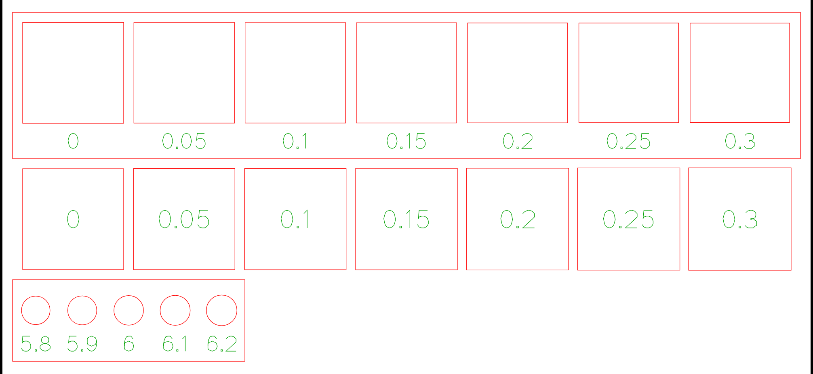
Material presets #
A preset stores thickness, sheet size, kerf, part spacing, sheet margin, density, cut speed, engrave speed and price per sheet under a name. Picking one changes all of them at once (one undo step).
- Starting points (built in): 3, 4 and 6 mm plywood. They are only guesses (kerf 0.15, or 0.2 for 6 mm; sheet 600 x 400; spacing 3; margin 5; density 0.65). They leave speeds and price alone, and cannot be deleted. Measure your own sheets and run the calibration sheet.
- Save… asks for a name and stores your current values (an existing name is replaced after a confirm). Delete removes one of your presets.
- The list shows the preset that matches the current values, and clears when you edit a field.
- Presets live in this browser only, not in the project file.
Compare materials #
Answers "which plywood should I buy?". Compare materials… (Material group, needs a model) slices the model with your current settings and then with every preset, one after another in the background. The table shows for each: thickness, layers, parts, sheets, sheet use, cut length, rough time (needs speeds), weight, cost (needs a price) and the number of warnings. The best values are marked. Use applies that row's preset (one undo step).
A preset replaces thickness, sheet size, kerf, spacing, margin, density, speeds and price. Everything else, including the outline mode, comes from your current settings; a layer range is ignored. Your preview is not touched; Cancel stops the comparison.
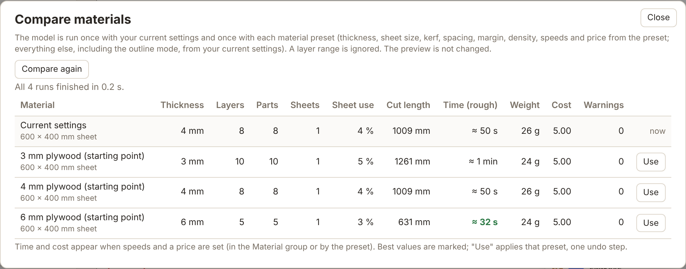
Estimates: weight, time, cost #
Four optional values give you a rough idea of weight, time and cost. 0 means not set and that estimate is hidden. They never change the slicing or the files.
Density
Used for the weight (glued volume x density). Plywood is about 0.6 to 0.7, MDF about 0.75. The volume is the sum of part areas (holes and cavities excluded, before kerf) times the thickness.
Cut speed
Your laser's cutting speed for this material. Time = cut length / speed.
Engrave speed
Your laser's engraving speed. Engrave lines and label strokes together.
Price per sheet
Cost = price x number of sheets used; a partly used sheet counts whole.
The time is a lower bound: it ignores travel moves, acceleration, corners, several passes and the BRIDGE layer speed. The full list (cut and engrave length, travel between cuts, glued volume, weight, time, cost) appears when you hover the summary line, in the Export group, and in the ZIP's README.txt.
Slicing group #
Controls how each layer's outline is taken from the model and cleaned up: Outline mode and Samples per layer, Round height to whole layers, Smooth outlines, Simplify tolerance and Min part area and Min feature. The defaults suit most models; change them when you see a specific problem.
Outline modes (oversize, mid-plane, undersize) and samples #
A layer is as thick as one sheet, but the model shape changes within that thickness, so the app has to decide which outline the flat part gets.
Outline mode
Oversize: each part covers the model everywhere inside its layer. Glue up, then sand the block down to shape. Mid-plane: the section in the middle of the layer; closest on average but with small steps both ways. Undersize: the part never sticks out of the model, so nothing needs sanding, but the result is slightly smaller and thin details can vanish.
Samples per layer
How many horizontal cross sections are looked at within a layer. Oversize uses their union, Undersize their intersection, so more samples find sloped or curved details a single section would miss. Use 5 or more for steep curves. Has no effect in Mid-plane mode. More samples slow slicing slightly.
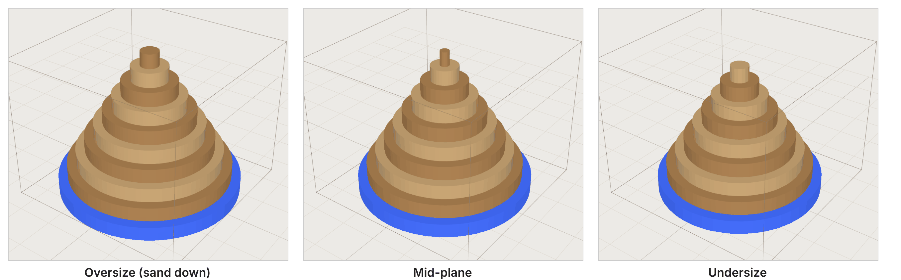
Beginner tip. Start with Oversize and sand. It is the forgiving choice: you can always remove wood, never add it.
Round height to whole layers #
Round height to whole layers
Scales the whole model slightly in all directions (proportions kept) so its height is an exact whole number of layers. Without it the top layer is only partly filled and the stack ends a bit taller than the model. The scale change is at most half a layer in height.
When: the final height matters more than the exact size, for example a lid that must be exactly as tall as your layers allow.
Smoothing #
Smooth outlines (0 = off)
Cleans ragged outlines (small steps, notches, wobbly inside corners) from rough or noisy meshes by rounding with this radius. 0.5 to 1 mm is typical, never more than a fifth of your thinnest wall.
How it works: smoothing follows the outline mode, so the mode's promise holds. Oversize only adds material (notches and inside corners are filled and rounded, outside corners stay sharp). Undersize only removes material (spikes, bumps and outside corners are shaved). Mid-plane does both. Anything narrower than twice the radius is lost: slots and gaps in Oversize; thin walls, islands and spikes in the other modes. It does not turn the flat facets of a coarse circle into a smooth curve; export a finer mesh for that.
Beginner tip: "it does nothing!" Smoothing is mode-aware. In the default Oversize mode it only rounds concave (inside) corners, so a convex shape such as a cylinder or a cube looks unchanged. In Undersize mode it rounds convex (outside) corners; in Mid-plane mode both. To see an effect on a convex part, switch to Undersize or Mid-plane, or try a part with notches and inside corners.
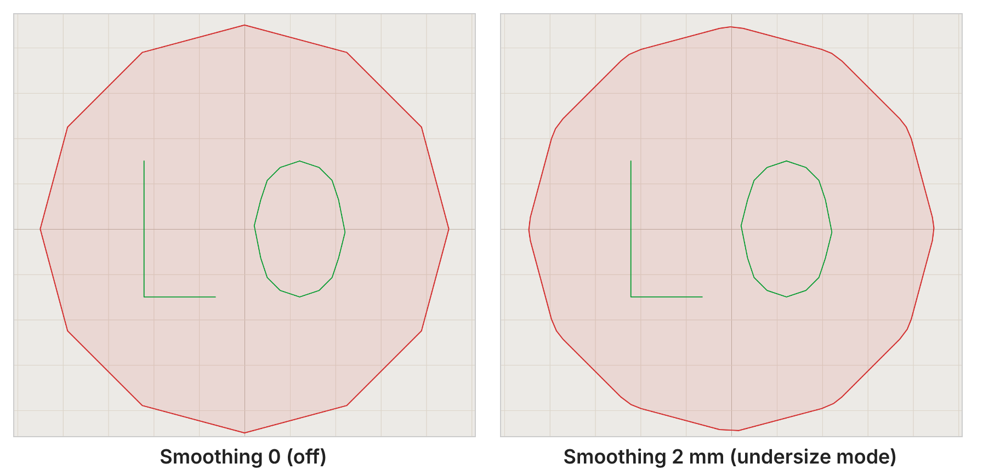
Simplify tolerance #
Simplify tolerance
Removes nearly-straight points from the outlines. No removed point is further from the outline than this. Meshes often produce thousands of tiny segments that make files large and the laser stutter on smooth curves. Typical 0.02 to 0.1; 0 turns it off. In Oversize mode simplification never cuts into the model and in Undersize never goes outside it. High values give faceted curves.
Minimum part area and minimum feature #
Min part area
Pieces smaller than this area, and holes smaller than this, are deleted. They are usually mesh noise or specks too small to cut or glue. Each removal is reported in the warnings. Typical 2 to 10; 0 keeps everything.
Min feature (0 = off)
Removes thin parts of an outline: any neck, spike or sliver narrower than this vanishes, while corners and larger shapes keep their size. A typical value is 1 to 2 mm, about the thinnest piece you can cut and glue reliably. It permanently loses detail and, unlike Min part area, also affects thin parts of big shapes.
Parts missing? Lower Min part area (or set it to 0) and check Min feature, then read the warnings: each removed part is listed.
Hollowing (wall, solid caps) #
Cuts a cavity out of the inner layers to save material, weight and cutting time. A wall of solid material remains at the model's outline and at every glue joint, and the bottom and top layers stay solid. Good for big domes or spheres, pointless for thin shapes.
Hollow inner layers
Turns hollowing on. Layers that are too narrow stay solid. If no layer has room for a cavity, a notice is shown.
Wall
Thickness of the solid wall around the cavity, measured inside the outlines of the layer below, the layer itself and the layer above. This keeps a ring at least this wide at every glue joint and leaves material to sand in Oversize mode. Thicker walls are stronger and give more glue area but save less material.
Solid cap layers
How many layers at the bottom and top stay completely solid. The first and last layer are always solid. Use 2 or 3 for a stronger floor and lid, or if you plan to drill or sand the ends.
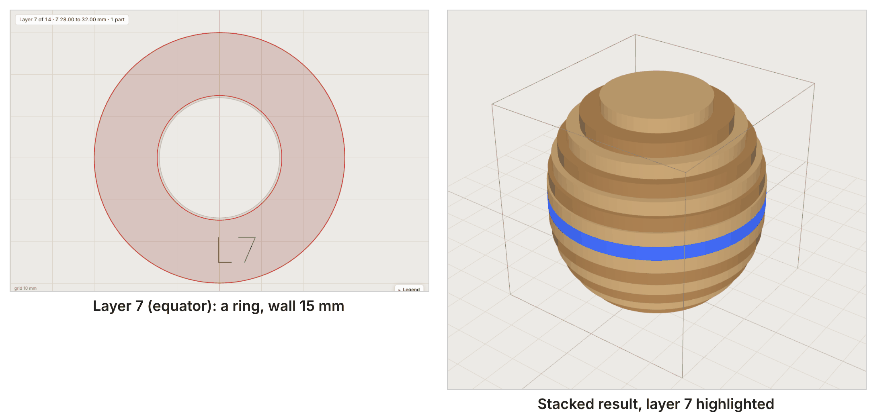
Note: the cavity is fully enclosed (no vent hole). Poke one in afterwards if trapped air or glue fumes matter. Thin hollow walls usually leave no room for dowels.
Gluing aids #
Stacking 40 near-identical discs is easy to get wrong. These aids make it fool-proof: an engraved outline shows where the next layer goes, labels number the parts, and dowel holes let you thread a rod through the stack. The assembly guide adds a printable overview. Stacking rules: cut face-up, stack bottom-up, never flip a part, glue each part on the engraved outline of the part below.
Engraved next-layer outline #
Engrave next-layer outline
Engraves a light line on top of each part showing where the next layer up goes. You glue each part exactly on that line. Stretches where the next layer's edge lies on the part's own edge are left out (they would only retrace the cut line), so a part completely covered by the next layer has none. The top layer has no next layer, so it has none either.
The line is engraved, not cut: run the ENGRAVE layer at low power (see At the laser). Strongly recommended.
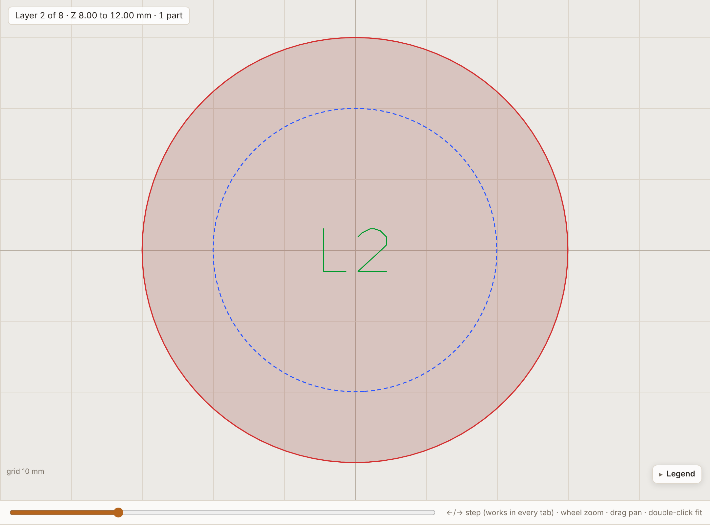
Layer labels #
Layer labels
Engraves the layer number (like L12, or L12-b for a second piece of the same layer) on each part. The label is placed in the area the next layer will cover, so it disappears inside the glued stack.
Label height
Height of the letters. If they do not fit in the joint area they are shrunk step by step down to 3 mm; if they still do not fit they are placed anywhere on the part. Typical 5 to 8; below 3 mm is hard to read on plywood.
Turn labels off for clean parts, but then you must keep the order yourself. Messages such as "label does not fit" or "shrunk" in the warnings only say the label is smaller or visible on the finished part.
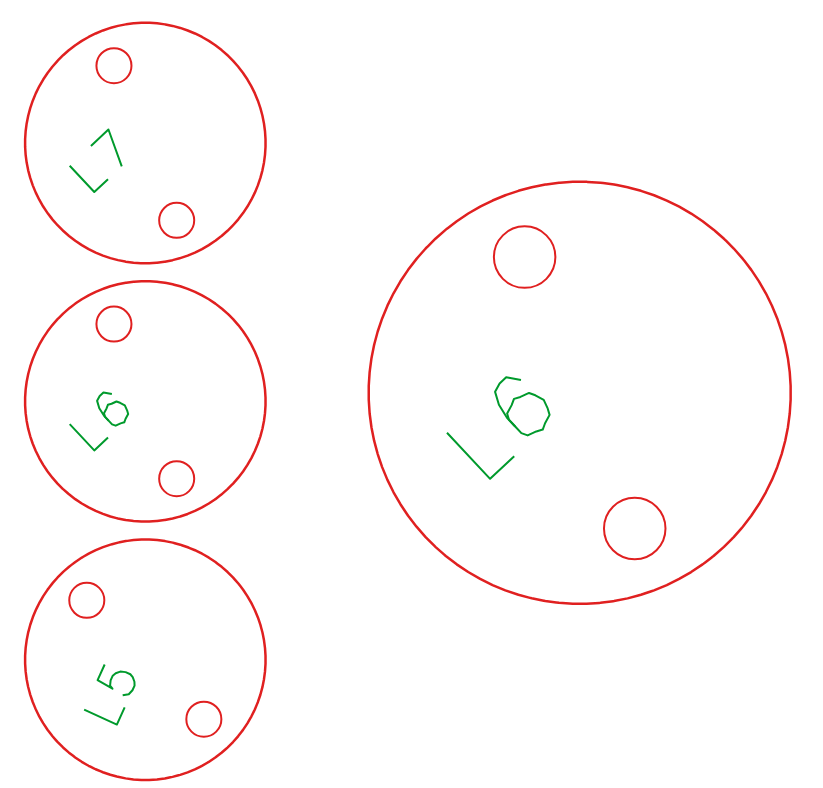
Dowel holes #
Dowel holes
Adds round holes at identical positions in a run of consecutive layers so you can thread a wooden rod through the stack while gluing. This stops layers from sliding.
Dowel diameter
Diameter of your actual rod or bamboo skewer. The hole in the cut path is made smaller by the kerf, so after burning it comes out at this size. Add 0.1 to 0.2 mm for a loose fit that is easier to glue. Larger holes need more room, so fewer layers get holes.
Dowel count
Holes per run of layers, placed as far apart as possible. Use 2 to lock rotation; 1 only keeps position and lets layers swivel. If the layers have room for fewer, you get fewer and a notice.
How it works: holes stay at least 3 mm away from every outline and cavity. A run of layers ends where the layers get too narrow, and a new run starts with its own holes. Runs of a single layer get no holes. If none were placed, read the warnings. Calibrate the hole size with the calibration sheet.
Holding bridges #
Short uncut tabs that keep each cut part attached to the sheet so it cannot fall, tilt or get pushed into the beam while the rest is being cut. After the job you break the parts out and sand the small stub. Bridges sit on straight edges where possible, evenly spaced. The gaps live on their own file layer, BRIDGE (magenta): give it low power or high speed so it only scores the plywood and the web stays, or leave BRIDGE out of the export to get plain uncut tabs.
Add holding bridges
Turns bridges on.
Bridges per outline
How many bridges each outline gets, spread evenly (2 puts them on opposite sides). 2 or 3 hold a small part; use 4 or more for large or heavy parts. An outline too short gets fewer, with a notice.
Bridge width
Material left per bridge, measured after kerf. The gap in the cut path is this width plus the kerf, so the remaining web is exactly this wide. 0.5 mm is typical for 3 to 4 mm plywood: holds the part, snaps easily. Wider holds better but needs more sanding.
Min outline length
Outlines with a shorter perimeter get no bridges, so small holes and tiny parts are not weakened. 40 mm is about a 10 mm square. Dowel holes never get bridges.
Also bridge inner holes
Also bridges the inner outlines (the scrap inside holes and cavities), so that scrap does not drop out and jam. Off by default because the scrap is waste anyway.
Max spacing (0 = off)
For long outlines: add bridges so that their spacing is at most this many mm (for example 150 for big plates). Up to 64 bridges per outline.
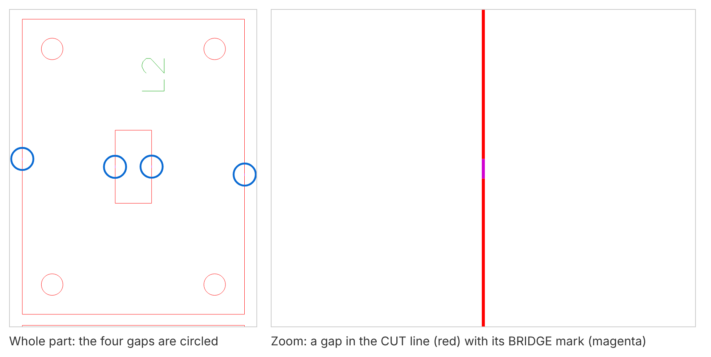
How parts are placed on sheets #
The app places the parts on as many sheets of your size as needed. This is automatic; there is nothing to set besides sheet size, part spacing and sheet margin.
- Each part is turned to its smallest bounding rectangle and packed as a rectangle (parts may also be turned 90 degrees). Round parts therefore waste sheet area: a sphere uses only about 13 % of a 600 x 400 mm sheet.
- Parts are placed layer by layer, largest first. Each part tries all open sheets before a new sheet is started.
- The summary shows material use as a percentage. Hover a part in the Sheets tab for its name; click to jump to its layer.
- A part bigger than the usable area (sheet minus margins) is reported and left out.
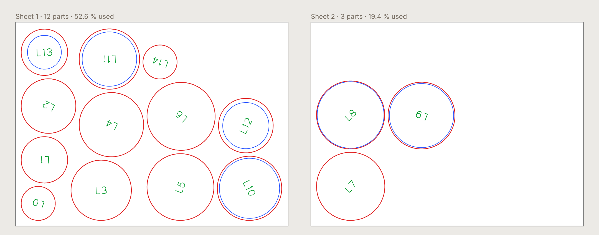
Export group and the ZIP file #
The Export group collects everything about the files: Formats, Layers in the files, Inner cuts on own layer, Layer range, Files (per sheet or per layer) and the image options, with a summary and Download all (ZIP).
The download is always one ZIP named <model>_laser.zip. Inside:
- one file per sheet and format:
<model>_sheet01.dxf,_sheet02, ... (or<model>_L012.dxfper layer), assembly.htmlif you ticked the assembly guide,README.txt: summary, estimates, all settings used, the stacking order, DXF layer colours and every warning.
Export settings never re-slice. Download always brings the preview up to date first.
File formats (DXF, SVG, PNG, JPG, assembly guide) #
Formats
Tick the files you want in the ZIP.
| Format | Use |
|---|---|
| DXF | The file to cut with. AutoCAD R12 format, millimetres, Y up, layers as described in Layers in the files. Opens in most laser software. |
| SVG | The same drawing, 1 unit = 1 mm, layers as groups. A second vector option for software that prefers SVG. |
| PNG / JPG | Pictures for engraving, previewing or tracing. Not for cutting directly. See PNG/JPG options. |
| Assembly guide (HTML) | A printable gluing guide, see below. |
Layers in the files (CUT, ENGRAVE, LABEL, BRIDGE, SHEET) #
These chips choose what is written into DXF, SVG, PNG and JPG. They are independent of the legend checkboxes, which only change the view. At least one must stay selected.
| Layer | Default | Contains |
|---|---|---|
CUT | on | Part outlines and dowel holes. Without it the files do not cut the parts out (a note warns you). |
ENGRAVE | on | The next-layer outline. |
LABEL | on | The layer numbers (as lines, no text entities, so no font is needed). |
BRIDGE | on | The bridge gaps. Without it the gaps stay uncut tabs. |
SHEET border | off | A frame around the sheet (grey in images). |
Use this, for example, to make one file with the cut lines only and a second with the engraving only. In the DXF every layer exists with a fixed colour, even if empty, so your colour mapping stays stable.
Inner cuts first / CUT_INNER #
Inner cuts on own layer (CUT_INNER)
Puts holes, hollowing cavities and dowel holes on a separate layer CUT_INNER (orange) in DXF and SVG, so only the outer outlines stay on CUT. In LightBurn and similar software you can then cut CUT_INNER first and CUT last, so a part cannot drop or shift before its holes are cut.
Even without this option the files list inner cuts before outlines. The option just lets you control the order in your software. PNG and JPG ignore it. Bridge gaps on inner rings stay on BRIDGE.
Stacked model (STL) #
Stacked model (STL)
Adds stacked.stl to the ZIP: the glued stack as one binary STL file in millimetres, Z up. Use it for a render, a CAD check or to compare with the original model in another program.
Each part’s final cut outline (after hollowing and kerf compensation, so exactly what is cut) is extruded to the material thickness and placed at its height in the stack. Holes, hollow cavities and dowel holes are included (dowel holes as 32-sided circles). The parts are not nested: they sit where they will be after gluing. Bridges and engraving are not part of it.
The file follows the layer range. It does not depend on the formats or on the CUT and ENGRAVE chips, and it does not re-slice anything. The stack is as tall as thickness times layer count, which can be a little more than the model.
Cutting order and travel #
In DXF and SVG each sheet is written in a sensible order: sheet border (if chosen), engraving, labels, then all holes and dowel circles of the sheet, then all outlines and finally the bridge gaps. A part is therefore marked before it can move, and no outline is cut before every hole of its sheet. Inside each group the path follows a nearest-neighbour route from the sheet's lower-left corner. The travel between cuts (about half of an unordered route on a multi-part sheet) is shown in the estimates and the ZIP README.
Your laser software may re-order things (LightBurn has its own order and optimisation); see At the laser.
Export a layer range #
Layer range to export (From / To)
Exports only some layers, for example to recut one that broke or went missing. Use the same numbers as the Layer tab and part names (layer 0 is the bottom, L012 is layer 12). An empty field means no limit; All layers resets.
Only those layers are nested, so the Sheets tab, the summary and the estimates show exactly what will be cut. Labels and engrave lines stay those of the full model, so a recut layer fits the rest of the stack. A range outside the model is clamped (the note under the fields says so) and a reversed range is swapped. Files per layer, the images and the assembly guide follow the range too.
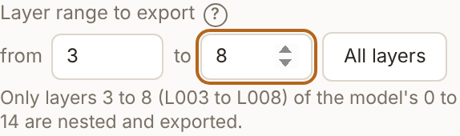
One file per layer #
Files
Per sheet (default): all parts nested together on sheets of your size, which is what you cut, with the fewest sheets. Per layer: each layer in its own file with only that layer's parts, not nested to the sheet; layers without parts are skipped.
Per-layer files suit cutting one layer at a time or finding a layer's parts easily, but they use material less efficiently.
PNG/JPG options (DPI, style, engrave) #
These appear when PNG or JPG is ticked. Images are for engraving, previewing or tracing, not for cutting without tracing. PNG gives sharper edges; JPG (quality 95) is smaller.
Resolution
Dots per inch; the DPI is stored in the file so it opens at true size. 254 DPI is exactly 10 pixels per mm. 600 or more gives sharper edges and much bigger files. Very large sheets are refused above a size limit, and the message suggests a lower value.
Image style
Filled draws each part as a solid black shape with holes white, for engraving or raster work. Outline draws only the cut lines as 1 pixel lines, useful as a tracing reference.
Engrave lines and labels (grey)
Also draws the engraved outline and the labels in grey. Turn it off for pure black part shapes. The DXF and SVG are not affected.
Assembly guide #
Tick Assembly guide (HTML) in the formats and the ZIP gets assembly.html: a printable A4 gluing guide. Gluing 20 or more layers is error-prone; this removes the guesswork.
- A header with model name, date, material, layers, parts, sheets, outline mode, drawing scale and estimates, and a short "how to glue" list.
- One block per layer: its id, the position (bottom / top), one line per part with the sheet it is on (so you can find it in the cut-out pile), the dowel hole count and a drawing of the layer in its model position with the layer below dashed.
- All drawings use one scale, so sizes can be compared. It follows the layer range.
It is one file that opens in any browser, needs no network or script, and prints in black and white (about three layers per page).
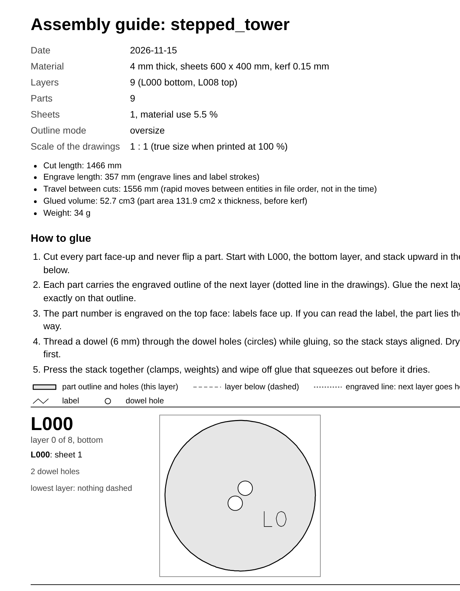
Project files and session restore #
The Project group saves your work.
Save settings… / Load settings…
Saves all settings (not presets, not the view) as laser-slicer-project.json and loads them again. Loading is one undo step.
Include the model in the project file
Also stores the original STL, OBJ or 3MF in the project file (the file grows by about a third of the model size). Loading brings back model and settings in one step. Needs a loaded model. A damaged model in a project file is reported and nothing is changed.
Restore the last model when the page opens
Keeps the last model in this browser (never leaves your device, models up to 50 MB) and loads it again when the page opens. Turning it off deletes the stored copy. The slicing result is not stored; it is computed again.
Independent of this, the app remembers your last settings in the browser. Presets, the auto-update choice and the hidden legend traces are also stored in the browser and are not part of the project file. If the browser blocks storage the app still works, it just starts with defaults.
At the laser: LightBurn & co. #
Open the DXF (or SVG) in your laser software. The file layers carry fixed colours, so the software puts each into its own layer, and you give each colour its own settings. The colours are AutoCAD colour indices (ACI).
| File layer | ACI colour | Set it to | Typical power |
|---|---|---|---|
CUT | 1 red | Line / cut (through) | Cutting power and speed for your plywood |
CUT_INNER | 30 orange | Line / cut, and order it before CUT | Same as CUT |
ENGRAVE | 5 blue | Line / score (mark only) | Low power, fast |
LABEL | 3 green | Line / score (mark only) | Low power, fast |
BRIDGE | 6 magenta | Line / score (does not cut through) or leave out | Low power so the web remains |
SHEET | 8 grey | Do not output (frame for reference) | Off |
- Import the DXF; check the size (the DXF is in millimetres, 1:1).
- Set a mode and speed/power for each colour as in the table. Test engraving power on a scrap: the glue line should be visible but not burn through.
- Set the order of the layers: engraving and labels first, then CUT_INNER (if you use it), then CUT last, and BRIDGE (if scored) before CUT. Cutting the outline last keeps the part from moving before it is marked.
- Place the plywood at the sheet origin your file expects (the lower-left corner of the sheet is 0,0), or use the software's origin settings.
- Do a test cut of the calibration sheet with the same settings.
General guidance only. The steps above are generic and not specific to one program; menu names differ between LightBurn, LaserGRBL, RDWorks and others, so use your software's own manual for the details. The DXF was only verified by reading it back with a DXF parser. It has not been tested in LightBurn, LibreCAD or other software, so check the imported colours, size and layer order before the first real job. Using PNG/JPG is not recommended for cutting.
If your software ignores layer colours, export separate files with Layers in the files: one with only CUT (and CUT_INNER), one with only ENGRAVE and LABEL.
Phones and tablets #
On a window up to 820 px wide (phones, small tablets) the settings panel becomes a drawer. Tap Settings in the tab bar to open it; Close, a tap on the dimmed view or Esc closes it, and choosing a model file closes it too, so you see the model. The views take the full width, the legend starts collapsed and buttons are large enough for touch. Everything else works as on the desktop.
You can slice and download on a phone, but you will probably still need a computer to open the DXF in your laser software. The phone layout was only tested with emulated devices, not on real hardware.
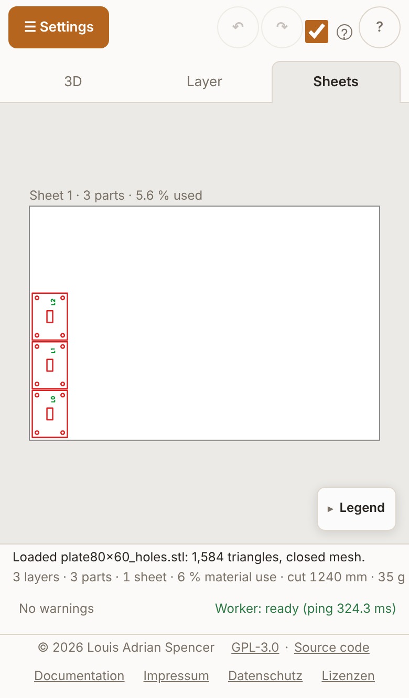
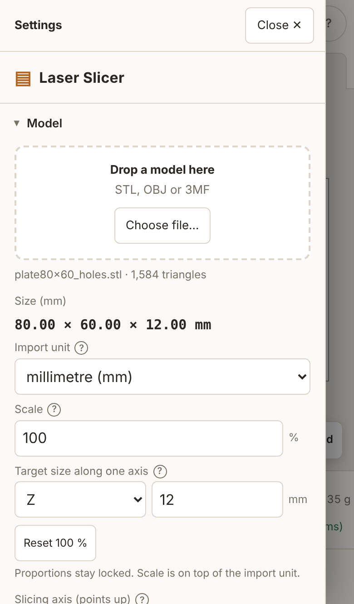
Troubleshooting / FAQ #
- The model is tiny or gigantic.
- STL and OBJ have no units. Change the Import unit (mm, cm, m, inch, ...) until the size readout is right. Then use Target size if needed.
- The stack comes out too small or too tall.
- Measure the real thickness with calipers. Consider Round height to whole layers.
- Parts are missing from a layer or the sheets.
- Check the warnings. Likely causes: Min part area or Min feature removed them; a part is bigger than the usable sheet (make the sheet bigger or the margin smaller); Undersize mode removed a thin detail; the layer lies above the model in Mid-plane mode ("Layer N is empty").
- Parts do not fit together, holes are too tight or too loose.
- Check the Kerf with the calibration sheet. Also check that your laser software does not add its own kerf offset (then set Kerf to 0 here) and that the file is imported at 100 %.
- The dowel does not fit.
- Run the dowel test of the calibration sheet and enter the value of the hole that fits. Do the kerf test first.
- No dowel holes appear.
- Dowels need two or more consecutive layers with enough room (holes keep 3 mm from every outline). Reduce the Dowel diameter or count, or turn hollowing off. See the warnings.
- Warnings about the mesh (open edges, non-manifold).
- The model is not watertight. The tool patches gaps per layer, usually fine for small gaps. For large gaps the layers can be wrong: look at those layers and repair the model in your modelling software.
- Label warnings.
- "Does not fit under the next layer" means the label is on a visible part of the part and will not be hidden; "shrunk" means smaller letters. Reduce Label height, or ignore them.
- The preview does not update.
- Auto-update may be off: click Update preview or press U.
- The page is slow with a large model.
- Turn off Auto-update and raise Simplify tolerance. Fewer samples per layer help a little.
- Parts fall or tilt while cutting.
- Use Holding bridges, or tape or weights.
- The outline is cut before the holes.
- Turn on Inner cuts on own layer and put CUT last in your laser software.
- Cut-outs are scorched.
- Raise Part spacing, lower power or raise speed in your laser software.
- The ZIP download is refused.
- Read the message under the button: no format or no layer selected, or a PNG/JPG would be too big (lower the DPI).
- My settings disappeared.
- They are stored in this browser. A private window or cleared site data starts fresh. Save a project file to keep them.
Privacy, offline use and licence #
- Everything stays on your device. The model is read and sliced in your browser. Nothing is uploaded, no analytics, no accounts.
- Offline. The app is a single HTML file; you can save the site folder and open
index.htmland this page from your disk without a network. The legal links and this documentation are relative, so they work from the folder too. - Stored in the browser: settings, material presets, a few view preferences and, only if you switch it on, the last model. See Project files and session restore.
- Licence. Free software under the GNU General Public License, version 3 only. The source is on GitHub. See Lizenzen below for third-party licences.
- Legal pages. The legal notice and the privacy policy are in German (Impressum, Datenschutz), which is the legally binding version, and in English translations (Legal notice, Privacy policy). Each page links to the other language.
- Tested in Chromium. Firefox, Safari and Edge are untested.
Glossary #
- ACI
- AutoCAD Colour Index: the numbers behind the layer colours in a DXF (1 red, 3 green, 5 blue, 6 magenta, 8 grey).
- Bridge / tab
- A short uncut stretch in an outline that keeps a part attached to the sheet until you break it out.
- Cap layers
- The solid layers kept at the bottom and top of a hollowed stack.
- DXF
- A common drawing exchange format; here the old, simple R12 version in millimetres.
- Dowel
- A wooden rod pushed through aligned holes to keep layers lined up.
- Engrave / score
- Marking the surface with low power instead of cutting through.
- Island
- A separate piece of one layer's outline; it becomes its own part (
L012-b). - Joint
- The overlap between a part and the next layer; where glue goes and where labels sit.
- Kerf
- The width of material the laser burns away.
- Layer
- One flat slice of the model, as thick as one sheet of material. Layer 0 is the bottom.
- Mesh / watertight
- The triangles of a 3D model. Watertight means closed without gaps.
- Nesting
- Arranging parts on sheets without overlap.
- Oversize / mid-plane / undersize
- The three ways to derive a layer outline from the model, see Outline modes.
- Sheet use
- The share of sheet area covered by parts.
- Stack
- The glued pile of layers.